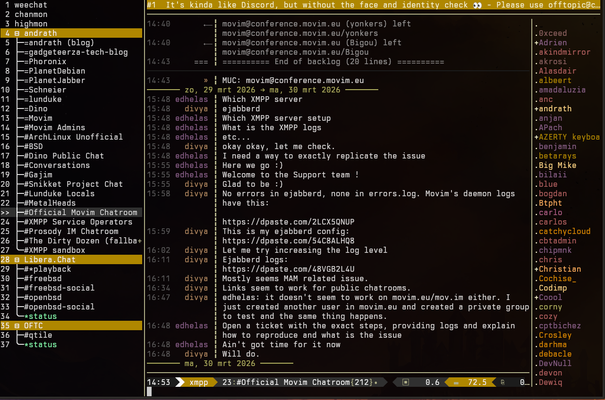

OMEMO Encryption
End-to-end encryption via XEP-0384 (OMEMO:2 + legacy). Keys stored in LMDB, automatic ratchet renegotiation.
Message Archive (MAM)
XEP-0313 history fetch on connect with local LMDB cache. RSM cursor persisted across reconnects.
Microblogging
XEP-0277 / XEP-0472 PubSub social feed — post, reply, boost, retract, comments. Compatible with Movim.
File Upload
HTTP File Upload (XEP-0363) with Stateless File Sharing (XEP-0447). Interactive picker or direct path.
Message Corrections
Edit or retract sent messages (XEP-0308 / XEP-0424). Interactive picker with last 20 messages.
Threaded Replies
XEP-0461 reply context with quoted preview. Fallback body stripping per XEP-0428.
MUC Support
Full XEP-0045 multi-user chat — kick, ban, topic, moderation (XEP-0425), reactions (XEP-0444).
Ad-hoc Commands
XEP-0050 data forms rendered inline. Multi-step sessions with field validation.
Ephemeral Messages
XEP-0466 — send messages that auto-delete after N seconds. Tombstoned locally on both ends.
Automatic Trust Management
XEP-0450 + XEP-0434 — TOFU + manual trust via /omemo approve / /omemo distrust; trust messages encrypted via OMEMO+SCE, batched per XEP-0434 §4, with sender authentication and deferred trust queues.
Encrypted File Sharing
XEP-0448 — AES-256-GCM encrypt files before upload; decrypt on receive automatically.
Installation
git clone --depth 1 git@github.com:ekollof/xepher.git cd xepher make install-deps # detects distro, installs packages make make install # installs to ~/.local/share/weechat/plugins/
Requires WeeChat ≥ 3.0, libstrophe, libxml2, lmdb, libomemo-c, gpgme, libfmt, and GCC ≥ 12 / Clang ≥ 16.
See the Installation wiki page for distribution-specific instructions and BSD notes.
Implemented XEPs
Targeting XMPP Compliance Suite 2022 (XEP-0459).
| XEP | Name | Notes |
|---|---|---|
| XEP-0030 | Service Discovery | |
| XEP-0045 | Multi-User Chat | |
| XEP-0048 | Bookmarks | |
| XEP-0050 | Ad-Hoc Commands | |
| XEP-0054 | vcard-temp | |
| XEP-0059 | Result Set Management | RSM paging for MAM and PubSub |
| XEP-0060 | Publish-Subscribe | |
| XEP-0066 | Out of Band Data | |
| XEP-0071 | XHTML-IM | Rendered with WeeChat color codes |
| XEP-0077 | In-Band Registration | |
| XEP-0084 | User Avatar | |
| XEP-0085 | Chat State Notifications | |
| XEP-0107 | User Mood | |
| XEP-0108 | User Activity | |
| XEP-0115 | Entity Capabilities | |
| XEP-0153 | vCard-Based Avatars | |
| XEP-0184 | Message Delivery Receipts | |
| XEP-0191 | Blocking Command | |
| XEP-0198 | Stream Management | |
| XEP-0199 | XMPP Ping | |
| XEP-0224 | Attention | |
| XEP-0245 | /me Command | |
| XEP-0249 | Direct MUC Invitations | |
| XEP-0277 | Microblogging over XMPP | |
| XEP-0292 | vCard4 over XMPP | |
| XEP-0308 | Last Message Correction | |
| XEP-0313 | Message Archive Management | |
| XEP-0333 | Displayed Markers | |
| XEP-0363 | HTTP File Upload | |
| XEP-0372 | References | |
| XEP-0382 | Spoiler Messages | |
| XEP-0384 | OMEMO Encryption | OMEMO:2 + legacy |
| XEP-0393 | Message Styling | |
| XEP-0402 | PEP Native Bookmarks | |
| XEP-0410 | MUC Self-Ping | |
| XEP-0424 | Message Retraction | |
| XEP-0425 | Message Moderation | |
| XEP-0428 | Fallback Indication | |
| XEP-0433 | Extended Channel Search | |
| XEP-0394 | Message Markup | Receive-only; takes precedence over XEP-0393 |
| XEP-0413 | Order-By | Newest-first ordering for pubsub MAM queries |
| XEP-0434 | Trust Messages | Encrypted (OMEMO+SCE), batched key-owners, sender auth gating |
| XEP-0441 | MAM Preferences | /mam prefs — view and set archiving policy |
| XEP-0442 | Pubsub MAM | Fetch feed history via MAM with RSM cursor persistence |
| XEP-0444 | Message Reactions | |
| XEP-0447 | Stateless File Sharing | |
| XEP-0448 | Encrypted File Sharing | AES-256-GCM encrypt/decrypt for OMEMO channels |
| XEP-0450 | Automatic Trust Management | TOFU + manual trust (/omemo approve//omemo distrust//omemo fingerprint) via XEP-0434 |
| XEP-0452 | MUC Mention Notifications | Receive missed @mention notifications from MUC service |
| XEP-0461 | Message Replies | |
| XEP-0466 | Ephemeral Messages | /ephemeral <seconds> <text> — auto-tombstone after timer |
| XEP-0472 | PubSub Social Feed | |
| XEP-0490 | Message Displayed Synchronization | Sync read state across own devices |
| XEP-0492 | Chat Notification Settings | /notify [jid] [always|on-mention|never] |
| XEP-0511 | OpenGraph Link Previews |